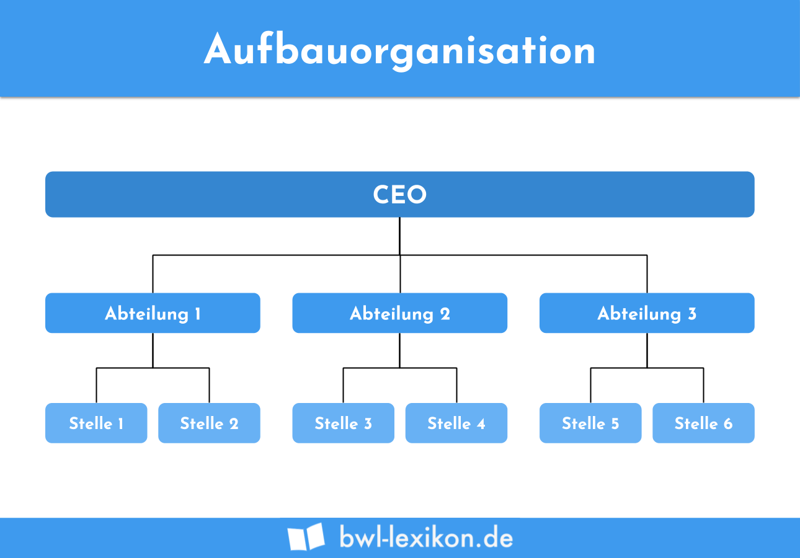
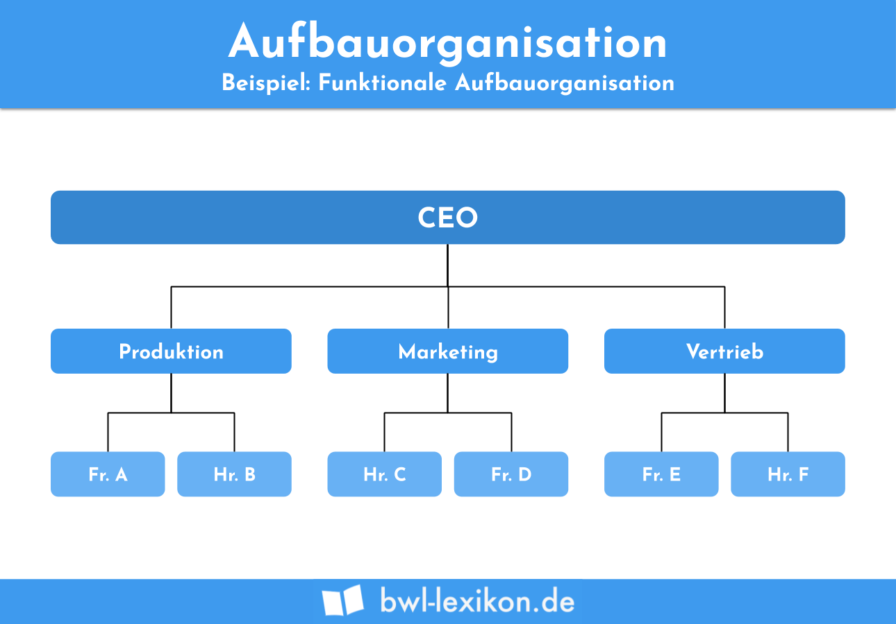
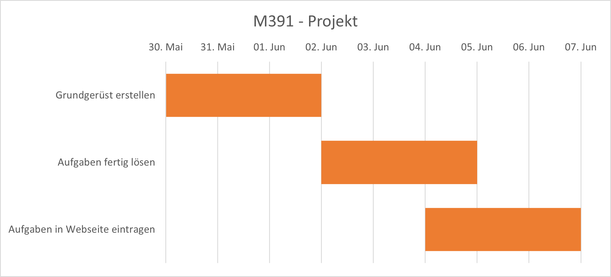
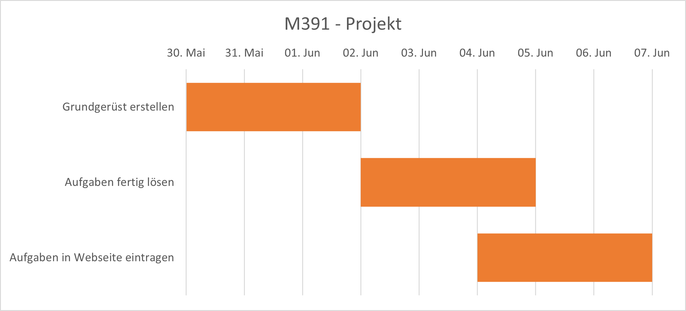
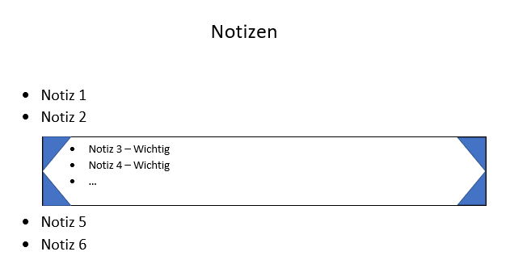
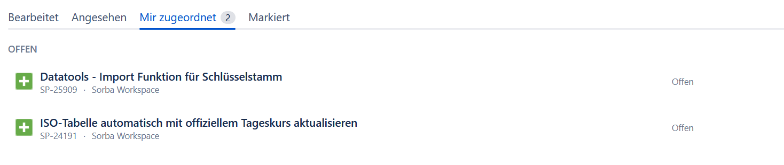

Home
Home
 Organisation
Organisation
 IPERKA
IPERKA
 Präsentationen
Präsentationen
 Impressum
Impressum
- Aufgaben und Aufträge in ihrem Lehrbetrieb
- Beziehung zwischen Aufbau- und Ablauforganisation
- Projektantrag
- Phasenablauf IT-Projekt
- Gannt-Diagramm
- Projektrollen und deren Aufgaben, Kompetenzen und Verantwortlichkeiten
- Notizen
- Informationen strukturieren
- Eigene Planung
- Reflexion Arbeitsplanung
Inhalt
Aufgaben und Aufträge in ihrem Lehrbetrieb
| Aufgaben | In meinem Lehrbetrieb habe ich die Aufgabe das Sitzungszimmer nach dem Benutzen zu reinigen und aufzuräumen. Die ist in der Regel einmal in der Woche, da wir einmal in der Woche eine Entwicklersitzung haben. Natürlich haben andere Abteilungen, wie z.B. der Support, auch eine Sitzung, jedoch muss ich nach dieser nicht aufräumen. |
|---|---|
| Auftrag | Ich hatte einmal den Auftrag, für die Lösungsvorschläge (macht ein Mitarbeiter einem Kunden, darin enthalten ist z.B. der ungefähre Preis) den Flyer, 10 Gründe für Sorba, welcher am Ende des Dokuments ist, auch auf Französisch und Italienisch einzubinden. Denn bisher war dieser immer auf Deutsch. |
| Informationen | Zu den Informationen gehört: Startdatum, Enddatum(Abgabetermin), Ort, Dauer(optional), benötigte Hilfsmittel. |
| Sonstiges | Abgesehen vom Sitzungszimmer aufräumen, habe ich nur Aufträge. Und zwar ist das so, dass die Entwicklung wöchentlich ein Meeting hat, in dem wir durch jeden Auftrag durchgehen (von allen) und kurz sagen, ob wir noch lange daran haben. Falls jemand dann sehr wenige oder nur kurze Aufträge hat, bekommt er dann noch einmal welche. |
Beziehung zwischen Aufbau- und Ablauforganisation
| Name | Aufbauorganisation | Ablauforganisation |
|---|---|---|
| Aufgabe |
|
|
| Beispiel |  |  |
| Was macht Unternehmen in Bezug zu Aufbau- oder Ablauforganisation erfolgreicher als andere? |
Firma kann viel besser arbeiten, wenn sich jeder auf seinen Bereich konzentrieren kann und nicht an 2 komplett unterschiedlichen Orten (z.B. Marketing und Entwicklung) arbeiten muss.
Es läuft auch alles viel einfacher/besser, wenn es einen geregelten Arbeitsablauf gibt. |
|---|
Projektantrag
Projektantrag.pdfPhasenablauf IT-Projekt
Meine Aufträge im Lehrbetrieb-
Image-Slider entwickeln (HTML, CSS, JavaScript)
Realisierung - Ich habe einem Image-Slider(Bilder-Karusell) mit HTML, CSS und hauptsächlich JavaScript entwickelt. In dem Slider kann man mit Pfeiltasten zwischen den Bilden wechseln. Man kann auch beliebig viel Bilder hinzufügen/entfernen.
-
Ausdruck von Bestellung (VB.NET)
Realisierung - Ich haben den Ausdruck von einer Bestellung ausdruckbar/als PDF speicherbar gemacht. Dazu musste ich die Daten aus verschieden Tabellen holen und dann zusammentragen/filtern.
-
Ausdruck eines Tagesrapportes anpassen anpassen (VB.NET)
Realisierung - Ich habe bei einem Tagesrapport ermöglicht, den Tagesrapport von mehreren Leuten gleichzeitg auszudrucken.
-
Funktion, um Grösse, Qualität, Bittiefe und Komprimierungslevel von Bildern zu verringern, erstellt (C#)
Realisierung - Ich habe den Auftrag erhalten eine Funktion zu entwickeln, welche Bilder verändert. Es soll die Grösse des Bildes, die Qualität, die Bittiefe und das Komprimierungslevel geändert werden können. Das ganze dient dazu, dass Bilder weniger Speicher brauchen.
-
In der Sekundarschule habe ich als Projektarbeit ein eigenes Game entwickelt.
Dabei muss man möglichst lange den den Gegner ausweichen und sie dabei noch abschiesen.
Da ich genau wusste das die kurze Zeit zu kurz war, um eine Programmiersprache zu lernen, habe ich mich dazu entscheiden, mein Game mit Snap! (ähnlich wie Scratch) zu erstellen.
Ich habe daraus gelernt wie wichtig Zeitmangement ist, da ich am Afang dachte dass ich locker fertig werde aber es am Schluss sehr knapp wurde.
Gannt-Diagramm
Das erstellen ist mir eher einfach gelungen, hat aber etwas länger gedauert.
Da ich das Diagramm in Excel erstellt habe, hatte ich einge Vidos zur Hilfe. 
Da ich das Diagramm in Excel erstellt habe, hatte ich einge Vidos zur Hilfe. 
Projektrollen und deren Aufgaben, Kompetenzen und Verantwortlichkeiten
| Rolle | Aufgabe | Kompetenz | Verantwortung |
|---|---|---|---|
| Arbeiter/Aufgabenträger |
|
|
|
| Tester |
|
|
|
| Projektleiter |
|
|
|
Notizen
Meine Notizen)
Normalerweise mache ich meine Notizen von Hand auf Papier.
Dabei nehme ich eigentlich für jedes neues "Thema" ein neues Blatt/neue Seite.
Die wichtigsten Sachen umrande ich (Bild).
Entweder das Blatt ist lose oder in einem Block (mehrheitlich).
Je nach dem wie wichtig das Thema ist und ob ich nochmals irgendwann habe, bewahre ich das Blatt auf oder nicht. Z.B. Ist ein Blatt über Löwen nicht so wichtig wie ein Blatt über eine Programmiersprache, welches ich irgendwann nochmal brauchen könnte. Dabei schreibe ich mehrheitlich Stichworte, aber es kann auch vorkommen das ich mal mehrere Sätze zusammen schreibe.

Je nach dem wie wichtig das Thema ist und ob ich nochmals irgendwann habe, bewahre ich das Blatt auf oder nicht. Z.B. Ist ein Blatt über Löwen nicht so wichtig wie ein Blatt über eine Programmiersprache, welches ich irgendwann nochmal brauchen könnte. Dabei schreibe ich mehrheitlich Stichworte, aber es kann auch vorkommen das ich mal mehrere Sätze zusammen schreibe.
Gute Notizen)
Gute Notizen sollten mit Abkürzungen, Symbolen, Stichworten und kurzen Sätzen arbeiten. Ebenfalls hilfreich sind Bilder, da sie vom Gehirn schneller/besser verarbeitet werden als komplizierte Beschreibungen/Formulierungen.
Verbesserungen für meine Notizen
Ich sollte mehr darauf achten nicht ganze Sätze zu formulieren.
Vielleicht sollte ich die Quellen mit aufschreiben damit ich es nochmals genau nachlesen könnte
Informationen strukturieren
Wie strukturiere ich Informationen)Daten können z.B. als Tabelle strukturiert sein. Oder als Stichworte. Oder als Mindemap. …
Ich persönlich bevorzuge die Tabelle bis zu einem gewissen Punkt, wo es einfach zu viele Informationen sind und ich deshalb dann auf Stichworte wechsle. Der Grund ist dass eine zu grosse Tabelle nicht mehr übersichtlich ist. Da man lange nach genau einem Eintrag suchen könnte
StrukturierungsTool - Word)
Mit Word kann ich auf der ersten Seite eine Liste mit Stichworten machen, und diese dann auf eine Seite weiter hinten verwiesen, wo dann z.B. Ein grosser, langer Text steht mit der Quelle. Dies kann man durch ein Inhaltsverzeichnis oder durch Querverweise machen. Dadurch kommt man schnell zu den Informationen welche man sucht.
Beispiel.pdf
Eigene Planung
ALPEN-MethodeDa ich es leider versäumt habe, die APLEN-Methohe über mehrere Tage zu Testen, ist dieser Teil der Aufgabe nicht gelöst.
Reflexion Arbeitsplanung
Arbeitsplanung im LehrbetriebBei und im Betrieb arbeiten wir mit dem Tool Jira.
Dort kann man innerhalb eines Projektes Tasks erstellen und Personen zuweisen.
Jeder Task kann einen Status haben (Offen, In Arbeit, Waiting for Review, In Review oder Closed).
Im Bereich "Ihre Aufgaben" kann man die bearbeiteten, die angesehenen, die einem Zugeordneten und die markierten Tasks. (Bild) 
Arbeitsplanung im Privaten
Persönlich nutze ich fast gar keine Arbeitsplanung. Aber wenn etwas in etwas entfernter Zukunft ist, trage ich das in den Kalender/Oulook ein.